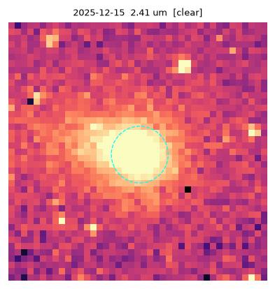

Step 1 of 5
What a candidate is
A candidate is a picture you think is worth checking again.
Three things to keep in mind
- It is a second look, not a discovery. Most candidates turn out to be ordinary. That is still useful.
- Unsure is fine. If you are not sure, you can mark it and say why in your own words later.
- Nobody is timing you. Take as long as you like on each picture.
Step 2 of 5
Signs to look for
Three kinds of change are worth a second look. Each row is the same patch of sky, oldest picture first.

How to read a real SPHEREx picture
The comet 3I/ATLAS on 15 December 2025, at 2.41 microns. Real SPHEREx data.
- Tiny: 41 by 41 pixels, so everything looks blocky.
- Colour scale, not real colour: dark purple is faint, pale yellow is bright.
- Grainy: every pixel has noise. A single speckle means little.
- Cyan circle: the position you chose.
The practice pictures below are drawn by our code to look like this, so we know the right answers.
These practice pictures share exactly one colour. In real data every picture has its own wavelength: pictures from the same detector are close in colour, not identical.
Step 5 of 5
In the sky viewer
Four checks before you press Mark as candidate on real SPHEREx pictures.
Before you mark
Then
Press Mark as candidate, just under the picture. Your marked pictures go to My candidates, step 3 of the sky viewer.
Checking whether saving is switched on…
What happens to a candidate
A candidate is a note to look again. In My candidates you can open each picture again, add a note saying what caught your eye, copy its link to share, or export your list. Anyone can then open the picture at the IRSA archive, from the sky viewer's Details tab, and check it more closely.